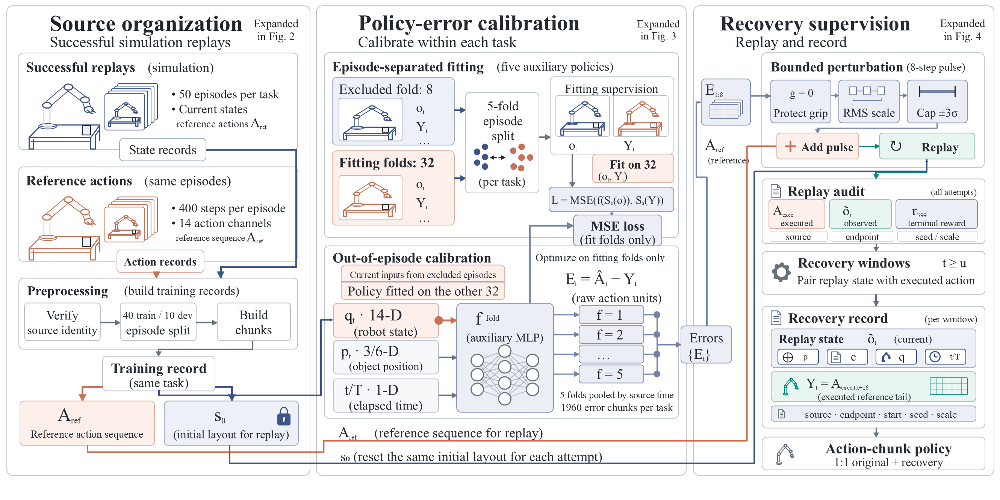
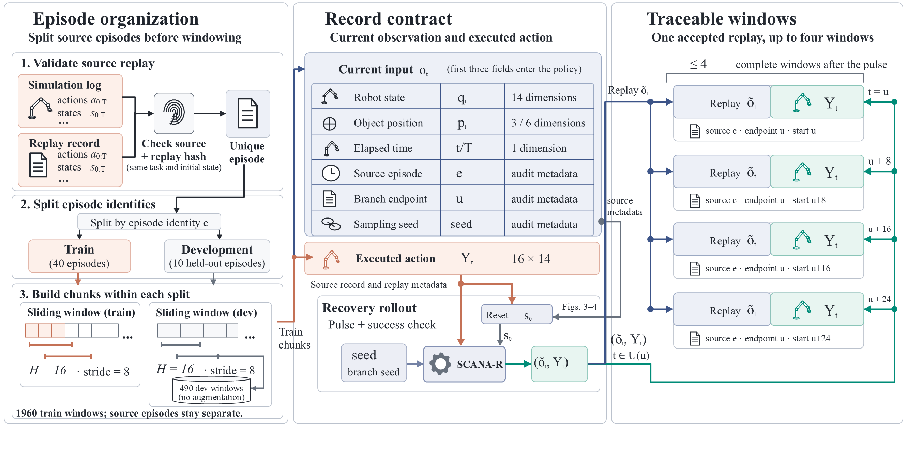
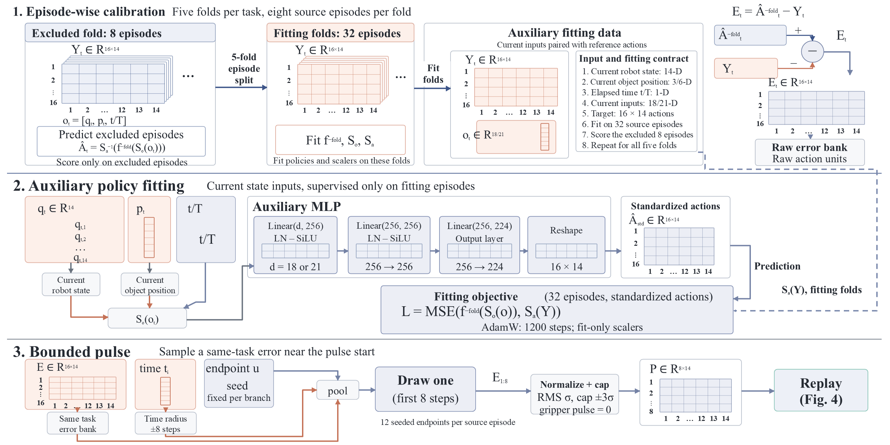
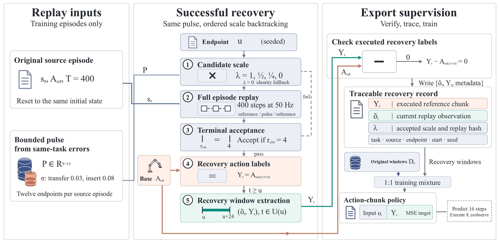

1. Calibrate
Five auxiliary policies predict chunks for held-out source episodes. The error bank preserves task and temporal phase.
Research manuscript State-based robot learning in simulation
Learn recovery from states the robot actually visits.
SCANA-R calibrates short action perturbations, verifies recovery in simulation, and trains on the resulting observations and executed actions.
Selected simulation examples · 1× speed · muted, looping video Open MP4 ↗
Successful demonstrations sparsely cover the states encountered after a policy deviates from its reference trajectory. SCANA-R uses source-episode cross-fitting to estimate policy errors, samples short action perturbations from the same task and nearby phase, and executes them in simulation. The reference action sequence then resumes; a recovery branch is accepted only when its terminal state satisfies the task’s success criterion. Recovery supervision pairs newly observed states with actions that were actually executed.
At a matched final training budget, task success improves from 67% to 92% on Transfer Cube and from 43% to 67% on Insertion relative to repeating clean demonstrations. Compared with Gaussian recovery, calibration provides a supported gain on Insertion, while the Transfer Cube comparison is inconclusive. The evaluation uses current privileged state in two ACT simulation tasks.
SCANA-R 从源回合交叉拟合误差中校准短时动作扰动，在仿真中执行扰动并恢复参考动作，以末态任务成功验收分支。恢复标签对应实际观测与实际执行的动作。在相同最终训练预算下，方块传递成功率由 67% 提升至 92%，插入任务由 43% 提升至 67%。相较高斯恢复，校准扰动在插入任务上具有区间支持的收益，方块传递上的差异尚不确定。当前证据来自特权状态仿真策略。
Calibrate the perturbation. Execute the recovery. Keep the observation and action together.

Five auxiliary policies predict chunks for held-out source episodes. The error bank preserves task and temporal phase.
A bounded eight-step pulse perturbs the joints while protecting the grippers. Failed branches retry with a smaller pulse.
After the pulse, pair actual observations with executed reference actions. Mix original and recovery records equally.



Same training seed. Same initial layout. Synchronized, uncut playback.
These are illustrative contrasts, selected as the lowest layout for seed 7 where SCANA-R succeeds and Clean repeat fails in each task. They are not a random sample. Videos replay archived actions at real-time speed; all 400 joint-state observations and step rewards per rollout match the saved records. Aggregate evaluation is reported below. Video provenance and rendering ↗
Five training seeds × 40 common layouts per task.
Matched initialization, batch streams and final training budgets.
| Method | Transfer Cube | Insertion |
|---|---|---|
| Clean repeat | 134 / 200 67.0% | 86 / 200 43.0% |
| Gaussian recovery | 175 / 200 87.5% | 90 / 200 45.0% |
| Frozen observations | 117 / 200 58.5% | 87 / 200 43.5% |
| SCANA-R | 184 / 200 92.0% | 134 / 200 67.0% |
Evaluation success uses maximum episode reward = 4; collection acceptance requires terminal reward = 4. In the CSV, “Calibrated recovery” denotes SCANA-R and “Frozen context” denotes frozen observations.
SCANA-R gains 25 and 24 percentage points over Clean repeat; paired 95% intervals are [7.5, 42.5] and [12.5, 36.0]. Against Gaussian recovery, the gain is 4.5 points on Transfer Cube [−5.0, 16.0] and 22 points on Insertion [5.0, 40.5]. The calibration benefit is task-dependent.
Intervals jointly resample paired seeds and layouts. Five policy fits are not 200 independent training runs; the recovery bank is fixed across seeds. Summary CSV · Paired comparisons
The complete CSV includes four historical label-only controls, for 3,200 rollouts in total. Their original checkpoints and sampling streams are retained; they diagnose earlier versions and are not single-component ablations. Recovery collection has additional simulator and auxiliary-training costs. There is no same-collection-budget DART reproduction. The experiments do not establish visual VLA/GR00T transfer, real-robot performance or general collision safety. Full evidence scope.
Start by recomputing the reported statistics from the included evaluation records. Simulator replay and video rendering use the separate, hash-verified trajectory bundle.
python -m pip install -r requirements-simulation.txt
python -m pip install -e . --no-deps
python -m unittest discover -s tests -v
python scripts/summarize.pyCode: Apache-2.0; ACT simulator assets: MIT. The trajectory and checkpoint bundle is prepared locally as SCANA-R-artifacts-v1.zip. This page is a local release preview; the paper, author list, official repository and public artifact URL will be added when finalized.